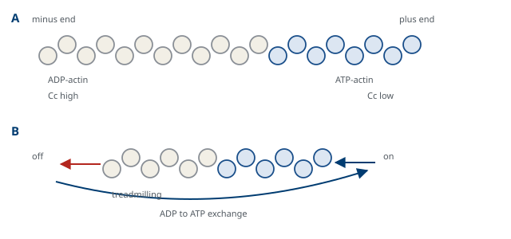
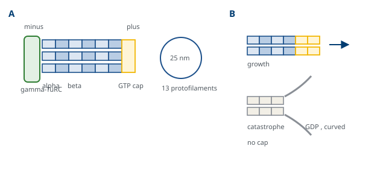

M01-W10-L02 · 인체일반생물학과 기초세포생물학
세포골격과 세포 운동
The Cytoskeleton and Cell Movement
학습목표
- 세포골격의 세 계통을 구조·극성·동역학·기능으로 비교하고 각 계통에 속하는 단백질을 든다.
- Actin 필라멘트의 중합 동역학을 임계농도와 ATP 가수분해로 설명하고 트레드밀링을 서술한다.
- Actin 결합 단백질을 기능별로 분류하고 각 단백질이 필라멘트의 배치를 어떻게 바꾸는지 설명한다.
- 근육 수축의 sliding filament 모형을 교차교 주기로 서술하고 Ca²⁺에 의한 조절을 설명한다.
- Microtubule의 구조와 동적 불안정성을 GTP 가수분해로 설명하고 중심체의 역할을 쓴다.
- Kinesin과 dynein의 방향성과 화물을 구분하고 운동 단백질의 공통 작동 원리를 설명한다.
- 중간섬유의 조립 원리와 조직별 종류를 들고 그 결손이 만드는 질환의 공통점을 설명한다.
- 세포 이동의 네 단계를 서술하고 lamellipodium과 filopodium의 분자적 기반을 구분한다.
- 섬모와 편모의 구조와 운동 기전을 쓰고 섬모 결손이 만드는 질환의 양상을 설명한다.
- 세포골격을 표적으로 하는 약물을 작용 지점별로 분류하고 그 임상적 쓰임을 설명한다.
선수지식
- M01-W05-L02 생체분자와 막의 구조 — 단백질의 구조 수준, 비공유 상호작용, 막의 성질
- M01-W09-L02 생체에너지: 자유에너지와 ATP — ATP·GTP 가수분해와 반응의 짝지음
- M01-W09-L01 단백질 표적화와 소포 수송 — 소포가 운반되어야 한다는 사실, endocytosis에서의 막 변형
- M01-W10-L01 미토콘드리아·엽록체·퍼옥시좀 — 소기관이 운반되고 분배되어야 한다는 요구
강의 구성
- 1. 세포골격이 해결하는 세 가지 문제
- 2. Actin 필라멘트의 중합 동역학
- 3. Actin 결합 단백질과 필라멘트의 배치
- 4. 근육 수축 — actin과 myosin의 미끄러짐
- 5. Microtubule의 구조와 동적 불안정성
- 6. 운동 단백질 — 궤도 위를 걷는 기계
- 7. 중간섬유 — 장력을 견디는 계통
- 8. 세포 이동
- 9. 섬모와 편모
- 10. 세포골격을 표적으로 하는 약물
- 11. 연결
1. 세포골격이 해결하는 세 가지 문제
세포는 모양을 가지고, 내부를 배치하고, 움직인다. 세 가지 모두 단단한 뼈대만으로는 되지 않는다. 뼈대가 고정되어 있으면 모양을 바꿀 수 없고, 소기관을 옮길 수도 없다. 그래서 세포의 뼈대는 끊임없이 만들어지고 해체되는 중합체다. 이 성질이 세포골격을 이해하는 첫 번째 열쇠다.
세포골격이 하는 일을 세 문제로 정리한다.
- 기계적 문제: 모양을 유지하고 장력과 압축을 견딘다. 상피세포가 당겨져도 찢어지지 않아야 한다.
- 공간적 문제: 소기관과 소포, 염색체를 제 위치에 두고 필요할 때 옮긴다.
- 운동의 문제: 세포 전체가 이동하고, 표면의 구조물이 움직이고, 근육이 수축한다.
세 문제를 세 계통의 중합체가 나누어 맡는다. 셋은 지름, 구성 단위, 극성, 동역학에서 체계적으로 다르다.
| 항목 | Actin 필라멘트(미세섬유) | Microtubule(미세소관) | 중간섬유 |
|---|---|---|---|
| 지름 | 약 7 nm | 약 25 nm | 약 10 nm |
| 구성 단위 | actin 단량체(구형) | α·β tubulin 이종이량체 | 길쭉한 막대 모양 단량체 |
| 결합 뉴클레오타이드 | ATP | GTP | 없다 |
| 극성 | 있다(+ 말단, − 말단) | 있다(+ 말단, − 말단) | 없다 |
| 운동 단백질 | myosin | kinesin, dynein | 없다 |
| 주된 역할 | 세포 표면의 변형, 이동, 수축 | 운반의 궤도, 방추, 섬모 | 장력에 대한 저항 |
| 기계적 성질 | 유연하고 쉽게 끊긴다 | 단단하지만 부러진다 | 당기면 늘어나며 버틴다 |
표의 마지막 세 줄에서 분업의 논리가 보인다. 극성이 있는 두 계통만 운동 단백질이 붙어 방향성 있는 운동을 만들고, 극성이 없는 중간섬유는 운반에 쓰이지 않고 기계적 저항만 담당한다. 또 중간섬유만 뉴클레오타이드를 쓰지 않으므로 조립과 해체가 에너지와 직접 짝지어지지 않고, 그만큼 안정하다.
세 계통의 이름이 지름에서 왔다는 점도 확인해 둔다. 근육세포에서 전자 현미경으로 관찰된 필라멘트를 굵은 것(myosin, 약 15 nm)과 가는 것(actin, 약 7 nm)으로 나누었고, 그 중간 지름을 가진 세 번째 계통이 뒤에 발견되어 중간섬유라는 이름을 얻었다. 즉 이름은 기능이 아니라 측정값에서 왔고, 그래서 이름만으로는 역할이 짐작되지 않는다. 이 수업에서 세 계통을 지름이 아니라 극성과 동역학으로 나누어 보는 이유가 여기에 있다.
2. Actin 필라멘트의 중합 동역학
Actin은 진핵세포에서 가장 풍부한 단백질 가운데 하나다. 단량체는 지름 약 5 nm의 구형 단백질이고 ATP 또는 ADP를 한 분자 붙잡고 있다. 단량체 상태를 G-actin, 중합체 상태를 F-actin이라 한다. 필라멘트는 두 줄이 서로 꼬인 나선 구조다.
중합에는 세 국면이 있다.
1. 핵 형성(nucleation): 단량체 몇 개가 모여 안정한 씨를 만드는 단계다. 느리고 불리하므로 잠복기가 생긴다. 2. 신장(elongation): 씨의 양 끝에 단량체가 붙어 빠르게 길어진다. 3. 정상 상태(steady state): 붙는 속도와 떨어지는 속도가 같아져 길이가 평균적으로 일정해진다.
임계농도(critical concentration)가 이 동역학을 지배한다. 자유 단량체의 농도가 임계농도보다 높으면 중합이, 낮으면 해체가 우세하다. 결정적인 사실은 두 말단의 임계농도가 다르다는 점이다. 단량체가 더 쉽게 붙는 쪽을 + 말단, 어려운 쪽을 − 말단이라 한다.
이 비대칭에서 중요한 현상이 나온다. 단량체 농도가 두 임계농도 사이에 있으면, + 말단에서는 붙고 − 말단에서는 떨어지는 상태가 된다. 필라멘트의 전체 길이는 변하지 않는데 단위들이 + 말단에서 들어와 − 말단으로 빠져나가며, 결과적으로 필라멘트가 한 방향으로 흐르는 것처럼 보인다. 이것을 트레드밀링(treadmilling)이라 한다.
방향성의 근거는 ATP 가수분해다. 단량체는 ATP를 붙잡은 상태로 + 말단에 결합하고, 결합한 뒤 얼마 지나 ATP가 ADP로 가수분해된다. ADP를 붙잡은 단량체는 필라멘트 안에서 결합이 약하다. 따라서 필라멘트의 + 말단 쪽은 ATP 형이 많아 안정하고, 오래된 − 말단 쪽은 ADP 형이 많아 떨어지기 쉽다. 가수분해가 "오래됨"을 표시하는 시계로 작동하며, 그 시계가 필라멘트에 방향성을 준다. 떨어져 나온 ADP-actin은 세포질에서 ADP를 ATP로 교환받아 다시 + 말단에 쓰인다.
여기서 하나의 일반 원리를 끌어낼 수 있다. 가수분해가 중합 자체를 가능하게 하는 것이 아니다. 중합은 뉴클레오타이드가 없어도 열역학적으로 일어날 수 있다. 가수분해가 하는 일은 중합체를 평형에서 벗어난 상태로 유지해 방향성과 동역학을 만드는 것이다. 같은 원리가 다음 절들의 microtubule에서도 반복된다.

3. Actin 결합 단백질과 필라멘트의 배치
세포 안의 actin은 저절로 중합하지 않는다. 100종이 넘는 결합 단백질이 언제 어디서 얼마나 중합할지를 정한다. 기능으로 분류하면 체계가 보인다.
| 기능 | 단백질 | 결과 |
|---|---|---|
| 단량체 저장 | profilin, thymosin | 중합할 수 있는 단량체 풀을 유지한다 |
| 핵 형성 | ARP2/3 복합체, formin | ARP2/3은 기존 필라멘트 옆에서 70° 가지를 내고, formin은 긴 직선 필라멘트를 만든다 |
| 말단 봉쇄 | capping protein, tropomodulin | 그 말단에서 중합과 해체를 멈춘다 |
| 절단·해체 | cofilin, gelsolin | 필라멘트를 끊고 ADP 형 단위의 해체를 가속한다 |
| 교차연결 | fimbrin, α-actinin, filamin | 다발 또는 그물로 묶는다 |
| 막에의 연결 | spectrin, ankyrin, dystrophin | 필라멘트를 막단백질에 고정한다 |
| 운동 | myosin 계열 | 필라멘트를 따라 미끄러지며 장력을 만든다 |
핵 형성 인자 두 가지의 차이가 특히 중요하다. ARP2/3은 이미 있는 필라멘트의 측면에 붙어 약 70°로 새 가지를 만들므로, 반복되면 가지가 촘촘한 그물이 된다. 이 구조가 이동하는 세포의 앞쪽 돌출부인 lamellipodium의 뼈대다. Formin은 + 말단에 붙어 머물면서 단량체를 빠르게 공급해 가지 없는 긴 필라멘트를 만들고, 이것이 다발로 묶여 filopodium과 수축성 다발을 이룬다. 같은 actin에서 어느 핵 형성 인자가 작동하느냐에 따라 전혀 다른 구조가 나온다.
교차연결 단백질은 간격으로 구별된다. 짧게 묶는 fimbrin은 단위들을 밀착시켜 장의 microvillus 같은 치밀한 다발을 만들고, 길게 묶는 α-actinin은 사이에 myosin이 들어갈 틈을 남겨 수축할 수 있는 다발을 만든다. 즉 교차연결의 간격이 그 구조가 수축할 수 있는지를 정한다.
막에의 연결이 임상과 직접 이어진다. 적혈구는 spectrin과 ankyrin이 만드는 막 아래 그물로 모양을 유지하며, 모세혈관을 통과할 때 크게 변형되었다가 되돌아온다. 이 그물의 구성 단백질에 변이가 생기면 막이 일부 떨어져 나가 세포가 공 모양이 되고, 변형 능력을 잃어 비장에서 파괴된다. 이것이 유전성 구형적혈구증이다. 근육에서는 dystrophin이 세포 안의 actin과 막의 당단백질 복합체를 잇는데, 이 연결이 끊어지면 수축의 힘이 막을 찢어 근섬유가 손상된다. Duchenne 근육병의 기전이며, 수축 단백질 자체가 아니라 힘을 전달하는 연결이 망가진 질환이라는 점이 요점이다.
4. 근육 수축 — actin과 myosin의 미끄러짐
Actin과 myosin의 상호작용이 가장 규칙적으로 조직된 예가 뼈대근육이다. 구조가 반복적이어서 기전을 측정하기 쉬웠고, 그 결과가 모든 actin-myosin 운동의 모형이 되었다.
근섬유 안에는 근육잔섬유(myofibril)가 들어 있고, 그것은 근육분절(sarcomere)이 길이 방향으로 반복된 구조다. 근육분절의 양 끝 Z 선에 actin 필라멘트(세선, thin filament)의 + 말단이 고정되어 있고, 가운데에 myosin II가 다발을 이룬 굵은 필라멘트(thick filament)가 놓인다.
Sliding filament 모형의 핵심은 필라멘트가 짧아지지 않는다는 것이다. 수축할 때 actin과 myosin의 길이는 변하지 않고, 두 필라멘트가 서로 미끄러져 겹침이 늘어나 근육분절이 짧아진다. 근거는 두 가지였다. 수축 전후에 A 띠(myosin이 있는 구간)의 폭이 변하지 않고 I 띠만 좁아진다는 현미경 관찰, 그리고 근육분절 길이와 장력의 관계가 겹침의 양으로 설명된다는 측정이다.
교차교 주기(cross-bridge cycle)가 미끄러짐을 만든다. Myosin 머리에서 일어나는 네 단계가 반복된다.
1. 결합: ADP와 Pᵢ가 떨어진 myosin 머리가 actin에 강하게 붙는다. 2. 파워 스트로크: 머리의 구조가 바뀌며 actin 필라멘트를 끌어당긴다. ADP가 떨어진다. 3. 해리: ATP가 머리에 결합하면 actin에 대한 친화도가 떨어져 머리가 떨어진다. 4. 재충전: ATP가 ADP와 Pᵢ로 가수분해되며 머리가 원래 각도로 되돌아가 다음 결합을 준비한다.
주기에서 두 가지를 확인해야 한다. 첫째, ATP는 힘을 만드는 데 쓰이지 않고 머리를 actin에서 떼어 내고 되돌리는 데 쓰인다. 파워 스트로크 자체는 이미 저장된 구조 변화가 풀리는 과정이다. 그래서 ATP가 없으면 머리가 actin에서 떨어지지 못해 근육이 굳는다. 사후경직(rigor mortis)이 이것이다. 둘째, 많은 머리가 비동기적으로 주기를 돌기 때문에 장력이 끊기지 않고 유지된다.
조절은 Ca²⁺이 수행한다. 안정 상태에서는 actin 필라멘트를 따라 놓인 tropomyosin이 myosin 결합 부위를 덮고 있다. 신경 자극으로 근소포체에서 Ca²⁺이 방출되면 troponin C에 결합하고, troponin 복합체의 구조 변화가 tropomyosin을 밀어내 결합 부위가 드러난다. 자극이 끝나면 Ca²⁺ 펌프가 Ca²⁺을 근소포체로 되돌려 수축이 끝난다. 즉 조절은 myosin이 아니라 actin 쪽에서 일어난다. 민무늬근육에서는 조절 방식이 다르다. Ca²⁺이 calmodulin과 결합해 myosin light chain kinase를 활성화하고, 그 kinase가 myosin을 인산화해 활성화한다. 같은 Ca²⁺ 신호가 조직에 따라 actin 쪽 또는 myosin 쪽에서 작동한다는 점이 두 근육을 구별하는 기준이다.
근육 밖에서도 같은 기전이 쓰인다. 비근육 세포에서 myosin II가 actin 다발을 수축시켜 세포에 장력을 만들고, 세포분열의 마지막 단계에서 수축환을 조여 세포질을 나눈다. 상세는 M01-W12-L01에서 다룬다.
Actin에는 조직 특이 동위형이 있다는 점도 알아 둔다. 사람에게는 여섯 종의 actin 유전자가 있어 뼈대근육, 심근, 민무늬근육, 그리고 비근육 세포에서 각각 다른 동위형이 쓰인다. 서열이 90% 이상 같지만 기능이 완전히 호환되지는 않아, 심근 actin(ACTC1) 변이는 심근병증을, 뼈대근육 actin(ACTA1) 변이는 선천성 근육병을, 민무늬근육 actin(ACTA2) 변이는 대동맥 박리를 포함한 혈관 질환을 일으킨다. 같은 단백질 가족 안에서 동위형의 분포가 질환의 조직을 정한다는 점에서, 앞 수업에서 본 효소의 동위효소와 같은 논리다.
5. Microtubule의 구조와 동적 불안정성
Microtubule은 α-tubulin과 β-tubulin의 이종이량체가 머리와 꼬리를 맞춰 길이 방향으로 이어진 원섬유 13개가 둥글게 모여 만든 빈 관이다. 지름은 약 25 nm, 벽의 두께는 이량체 하나다. 이량체가 한 방향으로 늘어서므로 관에도 극성이 있다. β-tubulin이 노출된 쪽이 + 말단, α-tubulin 쪽이 − 말단이다.
β-tubulin이 붙잡은 GTP가 동역학을 지배한다. 중합은 GTP 형 이량체가 + 말단에 붙으며 일어나고, 붙은 뒤 GTP가 가수분해되어 GDP 형이 된다. GDP 형 이량체는 굽은 구조를 선호하므로 직선 관 안에서 장력을 쌓는다. 끝에 GTP 형이 남아 있는 동안은 그 장력이 눌려 있지만, 끝의 GTP 형 모자(cap)가 사라지면 쌓였던 장력이 풀려 관이 끝에서부터 빠르게 풀어진다.
그 결과가 동적 불안정성(dynamic instability)이다. 하나의 microtubule이 같은 조건에서 천천히 길어지다가 갑자기 빠르게 짧아지고, 다시 길어진다. 두 상태 사이의 전환을 대재앙(catastrophe)과 구조(rescue)라 부른다. 중요한 점은 이것이 평균적인 길이 조절이 아니라는 것이다. 개별 microtubule이 전부 자라거나 전부 줄어드는 두 상태를 오가므로, 세포는 공간을 빠르게 탐색할 수 있다. 방추가 염색체를 찾는 과정, 그리고 세포가 방향을 바꿀 때 microtubule 배치를 재편하는 과정이 이 성질에 기댄다.
Actin의 트레드밀링과 비교하면 공통점과 차이가 분명하다. 둘 다 뉴클레오타이드 가수분해로 "오래됨"을 표시하고 그것이 해체를 유도한다. 차이는 거동이다. Actin은 전체가 한 방향으로 흐르는 정상 상태를 유지하고, microtubule은 개별 필라멘트가 성장과 붕괴를 오간다. 같은 원리에서 두 가지 다른 전략이 나온다.
세포 안에서 microtubule의 − 말단은 대개 한곳에 고정되어 있다. 동물 세포에서 그 장소가 중심체(centrosome)이고, 중심체는 두 개의 중심립(centriole)과 그 주변 물질로 이루어진다. 주변 물질에 있는 γ-tubulin 고리 복합체가 핵 형성의 씨로 작동해 − 말단을 붙잡고, + 말단이 세포 바깥쪽을 향해 자란다. 그래서 세포 안에는 중심에서 주변으로 향하는 방향의 좌표계가 생기고, 다음 절의 운반이 그 좌표를 쓴다. 신경세포의 축삭이나 상피세포처럼 특수한 배치가 필요한 경우에는 중심체 밖의 다른 구조가 핵 형성 자리로 쓰인다.
Tubulin은 번역 후 수식을 많이 받는다. C 말단에 tyrosine이 붙거나 떨어지고, acetyl기와 polyglutamate가 붙는다. 이 수식들이 운동 단백질과 조절 단백질의 결합을 바꾸므로, 같은 microtubule이 수식 양상에 따라 다른 화물을 받는 궤도가 된다. 안정한 microtubule에 acetylation이 축적되는 것이 그 예다.

6. 운동 단백질 — 궤도 위를 걷는 기계
극성이 있는 필라멘트는 궤도가 되고, 그 위를 걷는 단백질이 운동 단백질(motor protein)이다. 세 계열이 있다.
| 계열 | 궤도 | 이동 방향 | 주된 화물과 역할 |
|---|---|---|---|
| Myosin | actin | 대개 + 말단 쪽 | 근육 수축, 수축환, 짧은 거리 운반 |
| Kinesin | microtubule | 대부분 + 말단 쪽 | 소포와 소기관을 세포 주변으로, 방추 조립 |
| Dynein | microtubule | − 말단 쪽 | 화물을 세포 중심으로, 섬모 운동, 방추의 위치 |
작동 원리는 셋 모두 같다. ATP의 결합과 가수분해, 그리고 산물의 방출이 각각 머리의 구조 변화를 일으키고, 그 변화가 궤도에 대한 친화도를 바꾼다. 한쪽 머리가 붙어 있는 동안 다른 머리가 앞으로 나아가 붙는 교대가 반복되면 단백질이 궤도를 따라 걷는다. 두 머리가 번갈아 움직이는 이 방식을 손-발 교대(hand-over-hand)라 하고, 단일 분자 영상으로 직접 관찰되었다. Kinesin-1은 한 걸음이 8 nm이고 microtubule 이량체 하나의 길이와 정확히 같다. 즉 걸음의 크기가 궤도의 격자 간격에 맞추어져 있다.
운반의 방향은 궤도의 극성과 운동 단백질의 종류로 결정된다. 중심체가 가운데 있는 세포에서는 kinesin이 화물을 주변으로, dynein이 중심으로 옮긴다. 신경 축삭에서는 microtubule의 + 말단이 거의 모두 말단 쪽을 향하므로, kinesin이 축삭 말단 방향(anterograde) 운반을, dynein이 세포체 방향(retrograde) 운반을 담당한다. 이 배치의 결과가 둘이다. 새로 만든 소포와 미토콘드리아, 시냅스 구성 요소가 kinesin으로 말단에 공급되고, 말단에서 거둔 성장인자 신호와 분해할 물질이 dynein으로 세포체에 돌아온다. 일부 바이러스와 독소도 dynein을 이용해 세포체와 척수로 거슬러 올라간다. Tetanus toxin이 척수의 억제성 신경에 도달하는 경로가 그 예다(M01-W09-L01).
한 화물에 두 방향의 운동 단백질이 함께 붙어 있는 경우가 많다. 그러면 화물은 앞뒤로 흔들리듯 움직이며 알짜 방향은 두 계열의 활성 균형으로 정해진다. 조절은 운동 단백질을 더 붙이는 것이 아니라 어느 쪽을 켜는지로 이루어진다는 뜻이며, 결합 어댑터와 인산화가 그 역할을 한다.
운동 단백질은 운반만 하지 않는다. 궤도를 서로 미끄러뜨려 구조를 만들거나 변형시키는 데도 쓰인다. 두 개의 microtubule 사이에 끼인 kinesin이 양쪽을 반대 방향으로 밀면 두 microtubule이 멀어지고, 이것이 분열기 방추의 두 극을 밀어내는 힘이 된다. Dynein이 세포막 아래에 고정된 채 microtubule을 당기면 중심체의 위치가 옮겨지고, 이 방식으로 세포는 방추의 방향을 정한다. 즉 운동 단백질이 움직이는 것은 화물일 수도, 궤도일 수도 있다. 어느 쪽이 고정되어 있는지가 결과를 정하며, 다음 절의 섬모에서는 궤도가 서로 묶여 있어 미끄러짐이 굽힘으로 바뀐다는 세 번째 경우가 나온다.
운동 단백질의 속도와 지속성도 역할에 맞추어져 있다. Kinesin-1은 한 번 붙으면 수백 걸음을 떼며 1 μm 이상을 가므로 장거리 운반에 맞고, 일부 myosin은 짧게 붙었다 떨어지기를 반복해 여러 분자가 모여 장력을 만드는 데 맞는다. 한 분자가 오래 붙어 있어야 하는 일과 여러 분자가 번갈아 붙어야 하는 일이 다르다는 것이 이 차이의 이유다. 근육의 myosin II가 짧은 결합 시간을 가지는 것은, 많은 머리가 비동기적으로 작동해 장력을 끊기지 않게 유지하려면 각 머리가 빨리 떨어져야 하기 때문이다.
7. 중간섬유 — 장력을 견디는 계통
중간섬유는 앞의 두 계통과 성격이 다르다. 구성 단위가 길쭉한 막대 모양이고, 두 단량체가 나란히 꼬여 이량체를, 두 이량체가 반대 방향으로 맞물려 사량체를 만든다. 반대 방향으로 맞물리므로 사량체에 극성이 없고, 따라서 필라멘트 전체에도 극성이 없다. 이것이 중간섬유에 운동 단백질이 없는 이유다.
기계적 성질도 다르다. Actin 필라멘트는 쉽게 끊어지고 microtubule은 구부리면 부러지지만, 중간섬유는 당기면 늘어나면서 버틴다. 그래서 반복적인 기계적 부하를 받는 조직에서 세포가 찢어지지 않게 한다. 뉴클레오타이드를 쓰지 않으므로 조립과 해체가 느리고, 인산화로 조절된다.
종류가 조직마다 다르며, 그 분포가 병리 진단에 쓰인다.
| 종류 | 발현 조직 | 비고 |
|---|---|---|
| Keratin(두 부류) | 상피세포 | 54종 이상. 표피·점막·모발에서 조합이 다르다 |
| Vimentin | 중간엽 유래 세포 | 섬유아세포, 혈관내피 |
| Desmin | 근육세포 | 근육분절의 Z 선을 잇는다 |
| Glial fibrillary acidic protein | 별아교세포 | 반응성 별아교세포에서 증가한다 |
| Neurofilament(세 종류) | 신경세포 축삭 | 축삭의 지름을 정해 전도 속도에 관여한다 |
| Lamin(A형, B형) | 거의 모든 세포의 핵막 안쪽 | 핵막층을 이룬다(M01-W08-L03) |
표에서 두 가지를 읽어야 한다. 첫째, 중간섬유의 종류가 세포의 계통을 알려 주므로 면역조직화학에서 종양의 기원을 추정하는 표지로 쓰인다. Cytokeratin 양성이면 상피 기원(암), vimentin이나 desmin 양성이면 중간엽 기원(연부조직 종양)을 시사한다. 둘째, lamin이 중간섬유 계통이라는 사실이 핵막층의 기계적 성질을 설명한다.
중간섬유도 다른 두 계통과 연결되어 있다. Plectin 같은 연결 단백질이 중간섬유를 actin과 microtubule, 그리고 접착 구조에 묶으므로, 세 계통이 따로 작동하지 않고 하나의 연결된 그물로 힘을 나눈다. 세포가 당겨질 때 actin이 먼저 장력을 받고, 변형이 커지면 중간섬유가 받아 더 이상 늘어나지 않게 막는다는 측정이 있다. 부하가 작을 때와 클 때 담당하는 계통이 다르다는 뜻이며, 세 계통을 함께 보아야 세포의 기계적 거동이 설명된다. PLEC(plectin) 변이가 수포성 표피박리증과 근육병을 함께 일으키는 것이 이 연결의 임상적 증거다.
8. 세포 이동
세포가 기어가는 운동은 네 단계가 반복되는 주기다. 상처 치유, 면역세포의 이동, 발생 과정의 세포 이주, 그리고 종양의 침습이 모두 같은 기계를 쓴다.
1. 돌출(protrusion): 앞쪽에서 actin이 중합해 막을 앞으로 밀어낸다. 2. 접착(adhesion): 돌출한 부분이 세포외기질에 붙어 발판을 만든다. 3. 수축(contraction): myosin II가 세포체를 앞으로 당긴다. 4. 뒤쪽의 분리(retraction): 뒤쪽 접착이 끊어지고 그 부분이 끌려온다.
돌출의 구조는 두 가지다. Lamellipodium은 ARP2/3이 만든 가지 많은 그물로 된 넓고 얇은 판이고, filopodium은 formin이 만든 긴 필라멘트가 다발로 묶인 가느다란 돌기다. 전자는 전진의 주력이고 후자는 주변을 탐색하는 더듬이에 가깝다. 두 구조가 같은 actin에서 서로 다른 핵 형성 인자에 의해 만들어진다는 점이 §3의 요점을 다시 확인해 준다.
방향은 어떻게 정해지는가. 세포 표면의 수용체가 유인 물질의 농도 차이를 감지하면 신호가 비대칭으로 전달되어, 농도가 높은 쪽에서만 actin 중합이 활성화된다. 중심에 있는 조절자는 Rho 계열의 작은 GTPase 세 가지다. Rac이 ARP2/3을 켜 lamellipodium을, Cdc42가 formin을 켜 filopodium을, Rho가 myosin II와 수축성 다발을 활성화한다. 세 GTPase가 세포 안에서 공간적으로 분리되어 활성화되므로, 앞쪽에서는 돌출이 뒤쪽에서는 수축이 동시에 일어난다. 하나의 세포 안에서 서로 다른 신호가 서로 다른 위치에 배치되는 것이 방향성 있는 이동의 분자적 기반이다. 상세는 M01-W11-L02에서 다룬다.
접착은 integrin이 담당하며, 세포 안쪽에서 actin 세포골격과 연결된다. 접착이 너무 강하면 세포가 떨어지지 못해 느려지고, 너무 약하면 힘을 전달하지 못해 또 느려진다. 그래서 이동 속도는 접착의 강도에 대해 중간에서 최대가 되는 종 모양 관계를 보인다. 세포외기질과 접착 구조의 상세는 M01-W11-L01에서 다룬다.
세포 이동의 양식도 하나가 아니다. 지금까지 설명한 것은 평면 위를 기어가는 중간엽형 이동이다. 3차원 기질 안에서는 세포가 접착에 덜 의존하고 막을 부풀려 밀고 나가는 아메바형 이동을 쓰기도 하며, 면역세포가 조직 사이를 빠르게 통과할 때 이 방식이 관찰된다. 상피세포는 서로 붙은 채 집단으로 이동해 상처를 덮는다. 종양세포가 한 양식을 막았을 때 다른 양식으로 바꾸어 계속 침습한다는 관찰이 있어, 이동을 표적으로 하는 치료가 어려운 이유로 지적된다. 이동 기구가 여러 개라는 사실 자체가 치료의 장애가 되는 예다.
9. 섬모와 편모
세포 표면에서 움직이는 구조물은 microtubule로 되어 있다. 단면을 보면 9 + 2 배치, 즉 둘레에 이량체 microtubule 9개와 가운데 단일 microtubule 2개가 놓인 구조다. 이 구조를 축사(axoneme)라 하고, 뿌리에는 9 + 0 배치의 기저체(basal body)가 있다. 기저체는 중심립과 같은 구조다.
운동은 축사 dynein이 만든다. 둘레 이량체에 붙은 dynein이 옆 이량체를 따라 − 말단 쪽으로 걸으려 하는데, 이량체들이 nexin으로 서로 묶여 있어 미끄러질 수 없다. 그래서 미끄러짐이 굽힘으로 전환된다. 한쪽 dynein이 활성화되고 반대쪽이 억제되는 것이 축을 따라 번갈아 일어나면 파동이 생긴다. 같은 운동 단백질의 활동이 고정된 틀 안에서는 운동이 아니라 변형을 만든다는 원리이며, 근육의 sliding filament가 장력을 만드는 것과 비교할 만하다.
움직이지 않는 섬모도 있다. 거의 모든 세포가 하나씩 가지는 일차 섬모(primary cilium)는 9 + 0 배치이고 운동성이 없으며, 수용체가 몰려 있는 신호 수신 안테나로 작동한다. Hedgehog 신호 경로가 일차 섬모에서 작동하고, 신장 세관 세포의 일차 섬모가 관 안의 액체 흐름을 감지한다.
섬모의 구성 요소는 세포질에서 만들어져 섬모 안으로 운반되어야 한다. 섬모 안에는 리보솜이 없으므로 모든 단백질이 섬모 내 운반(intraflagellar transport)으로 들어오고 나간다. 축사의 microtubule을 궤도로 삼아 kinesin-2가 끝쪽으로, dynein-2가 뿌리쪽으로 화물을 옮기며, 그 사이에 운반 입자가 조립된다. 뿌리에는 전이 구역(transition zone)이라는 관문이 있어 어떤 단백질이 들어갈지를 가린다. 이 관문과 운반 기구의 구성 요소에 변이가 생기면 섬모가 짧아지거나 수용체가 제자리에 놓이지 못하고, 그 결과가 다음 상자의 섬모병이다. 섬모는 세포 안의 작은 구획이면서 그 안으로 들어가는 문을 따로 가진 구조라는 점에서 핵과 비교할 만하다.
10. 세포골격을 표적으로 하는 약물
세포골격은 약물과 독소의 큰 표적이다. 작용 지점으로 정리하면 효과와 부작용이 함께 설명된다.
| 약물·독소 | 표적 | 작용 | 쓰임 |
|---|---|---|---|
| Colchicine | tubulin | 중합을 막는다 | 통풍의 급성 염증 억제 |
| Vinca alkaloid(vincristine, vinblastine) | tubulin | 중합을 막아 방추를 해체한다 | 항암 |
| Taxane(paclitaxel, docetaxel) | microtubule | 안정화해 해체를 막는다 | 항암 |
| Nocodazole | tubulin | 중합을 막는다 | 연구용 |
| Cytochalasin | actin + 말단 | 중합을 막는다 | 연구용 |
| Latrunculin | actin 단량체 | 중합을 막는다 | 연구용 |
| Phalloidin | actin 필라멘트 | 안정화한다. 형광 표지로 쓴다 | 연구용 염색 |
표에서 중요한 것은 vinca alkaloid와 taxane이 서로 반대 방향으로 작동하는데 결과가 같다는 점이다. 전자는 microtubule을 해체하고 후자는 안정화하지만, 둘 다 분열기 방추가 동적 불안정성을 쓸 수 없게 만든다. 방추가 염색체를 찾아 붙잡고 장력을 조정하려면 microtubule이 자라고 줄어드는 성질이 필요하므로, 그 성질을 어느 방향으로든 없애면 분열이 멈춘다. 즉 표적은 microtubule의 길이가 아니라 동역학 자체다.
부작용도 같은 논리에서 예측된다. 두 계열 모두 분열이 왕성한 조직(골수, 점막, 모발)에 영향을 주고, 그에 더해 말초신경병이 흔하다. 축삭 운반이 microtubule에 전적으로 의존하므로, 가장 긴 축삭이 먼저 손상되어 손발의 감각 이상과 저림으로 나타난다. §6의 길이 의존적 침범의 논리가 그대로 적용된다. Colchicine이 통풍에 쓰이는 이유도 같은 축에서 설명된다. 호중구가 염증 부위로 이동하려면 microtubule과 actin 재편이 필요하므로, 중합을 막으면 이동과 inflammasome 활성화가 억제된다. 설사가 흔한 부작용인 것은 장 상피의 빠른 분열이 함께 영향을 받기 때문이다.
세포골격 표적 약물의 저항 기전도 표적의 성질에서 따라 나온다. 종양이 taxane에 저항하게 되는 경로는 세 갈래로 보고되었다. 약물을 퍼내는 유출 수송체의 발현 증가, β-tubulin의 동위형 구성이 바뀌어 약물이 덜 결합하는 것, 그리고 방추 검문지점의 약화로 염색체 정렬이 어긋난 채 분열을 넘어가는 것이다. 마지막 경로는 저항을 만들면서 동시에 염색체 불안정성을 키우므로, 저항한 종양이 더 이질적으로 변한다는 결과로 이어진다. 그래서 이 계열의 약은 단독으로 길게 쓰기보다 다른 기전의 약과 조합하는 전략이 쓰인다.
11. 연결
세포골격은 세포생물학의 거의 모든 주제와 맞닿아 있다.
- M01-W09-L01 단백질 표적화와 소포 수송 — 소포가 떨어져 나오고 운반되는 과정에서 actin과 microtubule이 하는 일, 그리고 dynamin에 의한 막 절단을 다룬다.
- M01-W10-L01 미토콘드리아·엽록체·퍼옥시좀 — 미토콘드리아의 분열이 운반의 전제가 되는 이유, 그리고 MFN2 변이가 긴 축삭을 침범하는 기전을 다룬다.
- M01-W10-L03 원형질막과 막수송 — 막의 유동성과 막 아래 골격의 연결, 적혈구 막의 구조를 다룬다.
- M01-W11-L01 세포외기질과 세포 간 결합 — integrin 접착과 desmosome이 세포골격을 기질과 이웃 세포에 잇는 방식을 다룬다. 이 수업의 접착 단계가 거기서 분자 수준으로 완성된다.
- M01-W11-L02 세포 신호전달 — Rho 계열 GTPase의 조절, 기계적 신호 전달의 경로를 다룬다.
- M01-W12-L01 세포주기와 그 조절 — 방추의 조립과 염색체 분리, 수축환에 의한 세포질 분할을 다룬다. 동적 불안정성이 거기서 기능으로 쓰인다.
- M01-W12-L03 암의 세포생물학 — 침습과 전이에서 세포 이동 기구가 쓰이는 방식, 그리고 microtubule 표적 항암제의 내성을 다룬다.
- M01-W03-L03 근육의 구조와 수축 — 뼈대근육과 심근의 수축을 생리학의 틀에서 다룬다. 이 수업의 교차교 주기가 거기서 전신 수준의 운동으로 이어진다.
- M02-W03-L02 신경근육 질환 — 근육병과 말초신경병의 분류와 진단 접근을 임상의 틀에서 정리한다.
확인 문항
Actin 필라멘트의 트레드밀링을 임계농도와 ATP 가수분해로 설명하고, 이 현상이 가능하려면 자유 단량체의 농도가 어떤 범위에 있어야 하는지 쓰라.
해설
필라멘트의 두 말단은 임계농도가 다르다. + 말단의 임계농도가 − 말단보다 낮으므로, 자유 단량체의 농도가 + 말단의 임계농도보다 높고 − 말단의 임계농도보다 낮은 범위에 있으면 + 말단에서는 중합이, − 말단에서는 해체가 동시에 일어난다. 전체 길이는 거의 변하지 않는데 단위가 + 말단으로 들어와 − 말단으로 빠져나가므로 필라멘트가 한 방향으로 흐르는 것처럼 보인다. 이것이 트레드밀링이다. 비대칭의 근거는 ATP 가수분해다. 단량체는 ATP를 붙잡은 상태로 + 말단에 결합하고, 결합한 뒤 ATP가 가수분해되어 ADP 형이 된다. ADP 형은 필라멘트 안에서 결합이 약하므로, 오래된 − 말단 쪽에서 떨어지기 쉽다. 즉 가수분해가 "그 단위가 결합한 뒤 얼마나 지났는가"를 표시하는 시계로 작동하고, 그 표시가 해체를 한쪽 말단에 집중시킨다. 가수분해는 중합을 가능하게 하는 것이 아니라 중합체를 평형에서 벗어난 상태로 유지해 방향성을 만든다.
같은 actin 단량체 풀에서 가지가 촘촘한 그물과 가지 없는 긴 다발이 각각 만들어진다. 두 구조를 만드는 인자와 그 결과로 생기는 세포 구조를 설명하라.
해설
핵 형성 인자가 다르다. ARP2/3 복합체는 이미 있는 필라멘트의 측면에 결합해 약 70° 각도로 새 필라멘트를 시작하므로, 반복되면 가지가 촘촘한 그물이 된다. 이 그물이 이동하는 세포의 앞쪽에서 막을 넓게 밀어내는 lamellipodium의 뼈대다. Formin은 필라멘트의 + 말단에 붙어 머물면서 profilin이 데려온 단량체를 빠르게 끼워 넣어 가지 없는 긴 필라멘트를 만들고, 이것이 교차연결 단백질로 다발이 되어 filopodium과 수축성 다발을 이룬다. 교차연결의 간격도 결과를 바꾼다. fimbrin처럼 짧게 묶으면 microvillus 같은 치밀한 다발이 되고, α-actinin처럼 길게 묶으면 사이에 myosin II가 들어갈 틈이 남아 수축할 수 있는 다발이 된다. 요점은 구조의 다양성이 actin 자체가 아니라 결합 단백질의 조합에서 나온다는 것이다. 신호 전달에서는 Rac이 ARP2/3 쪽을, Cdc42가 formin 쪽을 켠다.
근육에서 ATP가 고갈되면 근육이 이완되지 않고 굳는다. 교차교 주기로 이 현상을 설명하고, ATP가 실제로 어느 단계에 쓰이는지 쓰라.
해설
교차교 주기에서 ATP는 힘을 만드는 데 쓰이지 않는다. 순서는 다음과 같다. ADP와 Pᵢ가 떨어진 myosin 머리가 actin에 강하게 붙고, 머리의 구조 변화가 풀리며 필라멘트를 끌어당기는 파워 스트로크가 일어난다. 이 변화 자체는 이미 저장되어 있던 구조 변화가 방출되는 과정이다. 그다음 ATP가 머리에 결합하면 actin에 대한 친화도가 떨어져 머리가 떨어지고, ATP가 가수분해되면서 머리가 원래 각도로 되돌아가 다음 결합을 준비한다. 따라서 ATP는 해리와 재충전의 두 단계에 쓰인다. ATP가 없으면 머리가 actin에 붙은 상태에서 떨어질 수 없으므로 모든 교차교가 결합한 채 남아 근육이 단단하게 굳는다. 사후경직이 이 상태이며, 시간이 지나 단백질이 분해되면 풀린다. 이 사실은 이완이 수동적 과정이 아니라 ATP를 요구하는 과정이라는 점도 함께 보여 준다. Ca²⁺을 근소포체로 되돌리는 펌프도 ATP를 쓰므로, 에너지가 부족하면 이완이 두 지점에서 모두 지연된다.
Vinca alkaloid는 microtubule을 해체하고 taxane은 안정화하는데 둘 다 항암제로 쓰인다. 모순처럼 보이는 이 사실을 설명하고 공통 부작용을 예측하라.
해설
두 약물의 표적은 microtubule의 길이가 아니라 동역학이다. 분열기 방추가 염색체를 찾아 붙잡고 양쪽 극에서 걸리는 장력을 조정하려면 microtubule이 자라고 줄어드는 동적 불안정성을 쓸 수 있어야 한다. Vinca alkaloid는 tubulin의 중합을 막아 방추를 해체하고, taxane은 microtubule에 결합해 해체를 막아 고정시킨다. 방향은 반대지만 결과는 같다. 둘 다 동적 불안정성을 없애므로 염색체가 올바르게 정렬하지 못하고, 방추 검문지점이 분열을 멈추어 세포가 죽는다. 공통 부작용도 같은 논리에서 나온다. 분열이 왕성한 조직인 골수, 점막, 모발이 영향을 받아 혈구 감소, 점막염, 탈모가 생긴다. 여기에 더해 말초신경병이 두 계열 모두에서 흔하다. 축삭 운반이 microtubule에 전적으로 의존하므로, 가장 긴 축삭의 말단이 먼저 손상되어 손발의 저림과 감각 저하로 나타난다. 길이 의존적 침범이라는 점에서 앞에서 다룬 운반 장애 질환과 같은 분포를 보인다.
어떤 환자가 어린 시절부터 반복되는 부비동염과 기관지확장증을 가지고 있고 흉부 X선에서 심장이 오른쪽에 있었다. 결혼 후 불임으로 검사를 받았다. 하나의 기전으로 이 소견들을 설명하라.
해설
운동 섬모의 결손, 즉 일차 섬모 운동 이상증이다. 축사의 dynein 팔이나 그 조립 인자의 결손으로 섬모가 정상적인 파동을 만들지 못한다. 소견들이 각각 섬모의 기능 목록에 대응한다. 호흡기 점막의 섬모가 점액을 밀어내지 못해 분비물이 정체되고 반복 감염이 일어나 만성 부비동염, 중이염, 기관지확장증이 생긴다. 정자의 편모는 축사와 같은 구조이므로 운동성이 없어 남성 불임이 되고, 여성에서는 난관 섬모의 기능 저하로 생식력이 떨어진다. 내장역위는 발생 초기에 좌우 비대칭을 정하는 결절 섬모의 흐름이 없어 좌우 결정이 무작위로 이루어진 결과이며, 그래서 환자의 약 절반에서 나타난다. 기관지확장증, 만성 부비동염, 내장역위의 조합을 Kartagener 증후군이라 한다. 진단은 코 점막의 산화질소 측정, 섬모 운동의 고속 영상 관찰, 전자 현미경에서 dynein 팔의 결손 확인, 유전자 검사로 이루어진다. 비운동성 일차 섬모의 결손은 전혀 다른 양상, 즉 다낭성 신질환과 망막 퇴행 쪽으로 나타난다는 점을 함께 구별해야 한다.
유전성 구형적혈구증과 Duchenne 근육병은 모두 세포골격과 막의 연결이 끊어진 질환이다. 두 질환의 기전을 비교하고 공통 원리를 쓰라.
해설
유전성 구형적혈구증에서는 적혈구 막 아래의 spectrin-ankyrin 그물과 막단백질의 연결이 약해진다. 그 결과 막의 일부가 소포로 떨어져 나가 표면적 대 부피 비가 줄어들고 세포가 공 모양이 된다. 구형 적혈구는 변형 능력을 잃어 비장의 좁은 통로를 통과하지 못하고 파괴되므로, 용혈성 빈혈과 비장비대, 황달이 나타난다. Duchenne 근육병에서는 dystrophin이 없어 세포 안의 actin과 막의 당단백질 복합체를 잇는 연결이 끊어진다. 근육이 수축할 때 발생하는 힘이 막으로 전달되는 과정에서 막이 찢어지고, Ca²⁺이 들어와 손상을 악화시켜 근섬유가 반복적으로 파괴되고 결국 섬유화와 지방 침윤으로 대체된다. 공통 원리는 세포골격이 힘을 견디려면 막에 고정되어 있어야 한다는 것이다. 골격 자체나 수축 기구가 정상이어도 그것을 막에 잇는 연결이 끊어지면, 세포가 받는 기계적 부하가 막을 손상시킨다. 그래서 두 질환은 각각 기계적 부하가 큰 세포, 즉 변형을 반복하는 적혈구와 수축하는 근섬유에서 발현한다.
신경 축삭에서 운반의 방향성이 어떻게 보장되는지 설명하고, 이 배치가 질환과 약물 부작용에서 어떤 결과를 낳는지 쓰라.
해설
축삭 안의 microtubule은 거의 모두 + 말단이 축삭 말단 쪽을 향하도록 정렬되어 있다. 운동 단백질은 궤도의 극성에 대해 고정된 방향으로 움직이므로, kinesin은 말단 방향으로, dynein은 세포체 방향으로 화물을 옮긴다. 따라서 새로 만든 소포, 미토콘드리아, 시냅스 구성 요소는 kinesin이 말단에 공급하고, 말단에서 받은 성장인자 신호와 분해할 물질은 dynein이 세포체로 가져온다. 결과는 두 가지다. 첫째, 운반 기구나 궤도, 또는 운반될 화물에 결함이 생기면 가장 먼 말단이 먼저 영향을 받아 길이 의존적 침범, 즉 발에서 시작해 올라가는 좌우 대칭의 신경병이 나타난다. kinesin 유전자 변이에 의한 유전성 경직성 하지마비, dynein 어댑터 변이에 의한 운동신경 질환, MFN2 변이에 의한 Charcot–Marie–Tooth 2A형이 그 예다. 둘째, microtubule을 표적으로 하는 항암제(vinca alkaloid, taxane)가 같은 분포의 말초신경병을 일으킨다. 또 일부 바이러스와 tetanus toxin이 dynein을 이용해 세포체와 척수로 거슬러 올라간다는 점도 이 배치의 결과다.
중간섬유에는 운동 단백질이 없다. 그 이유를 구조로 설명하고, 중간섬유가 담당하는 기능이 다른 두 계통과 어떻게 다른지 쓰라.
해설
중간섬유의 조립 단위에 극성이 없기 때문이다. 길쭉한 단량체 두 개가 나란히 꼬여 이량체를 만들고, 두 이량체가 서로 반대 방향으로 맞물려 사량체를 이룬다. 반대 방향으로 맞물리므로 사량체의 양쪽이 동등하고, 그것들이 이어진 필라멘트에도 + 말단과 − 말단의 구별이 없다. 운동 단백질은 궤도의 극성을 읽어 한 방향으로 움직이는 기계이므로, 극성이 없는 필라멘트 위에서는 방향성 있는 운동이 성립하지 않는다. 기능의 차이도 구조에서 나온다. 중간섬유는 뉴클레오타이드를 결합하지 않으므로 조립과 해체가 에너지와 직접 짝지어지지 않고 느리며, 그만큼 안정하다. 기계적으로는 당기면 늘어나며 버티는 성질을 가져 장력에 저항한다. Actin 필라멘트는 쉽게 끊어지고 microtubule은 구부리면 부러지므로, 반복적인 기계적 부하를 견디는 일은 중간섬유가 맡는다. 그래서 상피, 근육, 축삭처럼 부하가 큰 조직에서 중간섬유의 결손이 세포가 찢어지는 양상의 질환으로 나타난다.
Microtubule의 동적 불안정성과 actin의 트레드밀링은 모두 뉴클레오타이드 가수분해에 기대지만 거동이 다르다. 두 거동의 차이와 각각이 세포에서 쓰이는 맥락을 설명하라.
해설
공통점은 가수분해가 단위의 "오래됨"을 표시하고, 오래된 단위가 결합이 약해 해체되기 쉽다는 것이다. 차이는 그 표시가 만드는 거동이다. Actin에서는 + 말단에서 중합, − 말단에서 해체가 꾸준히 일어나는 정상 상태가 유지되므로 필라멘트 집단 전체가 한 방향으로 흐르는 트레드밀링이 된다. Microtubule에서는 + 말단의 GTP 모자가 있는 동안 성장하다가 모자가 사라지면 쌓여 있던 굽힘 장력이 풀려 끝에서부터 빠르게 붕괴하므로, 개별 microtubule이 성장과 붕괴라는 두 상태를 오간다. 쓰이는 맥락도 다르다. 트레드밀링은 세포 앞쪽에서 막을 지속적으로 밀어내는 데 적합하다. 중합이 앞에서 계속되고 뒤에서 단위가 회수되므로 재료를 재사용하며 전진할 수 있다. 동적 불안정성은 공간을 빠르게 탐색하는 데 적합하다. 방추의 microtubule이 여러 방향으로 자라다가 염색체의 kinetochore를 만나면 안정화되어 붙잡히므로, 시행과 선택으로 올바른 연결을 찾을 수 있다. 세포가 방향을 바꿀 때 microtubule 배치를 재편하는 것도 같은 성질에 기댄다.
이동하는 세포에서 앞쪽과 뒤쪽이 서로 다르게 행동하는 것을 Rho 계열 GTPase로 설명하고, 접착의 강도와 이동 속도의 관계를 쓰라.
해설
Rho 계열의 세 GTPase가 세포 안에서 공간적으로 분리되어 활성화된다. 앞쪽에서는 Rac이 활성화되어 ARP2/3을 켜 가지 많은 actin 그물을 만들어 lamellipodium으로 막을 밀어내고, Cdc42가 formin을 켜 filopodium을 내어 주변을 탐색한다. 뒤쪽과 세포체에서는 Rho가 활성화되어 myosin II와 수축성 다발을 만들어 세포체를 앞으로 당기고 뒤쪽 접착을 끊는다. 유인 물질의 농도 차이를 수용체가 감지하면 이 활성의 분포가 비대칭으로 설정되므로, 하나의 세포 안에서 돌출과 수축이 서로 다른 위치에서 동시에 일어나 방향성 있는 이동이 된다. 접착은 integrin이 세포외기질과 결합하고 안쪽에서 actin에 연결되어 힘을 전달한다. 접착이 너무 약하면 돌출한 부분이 발판을 얻지 못해 힘이 전달되지 않고, 너무 강하면 뒤쪽이 떨어지지 못해 세포가 끌려오지 못한다. 그래서 이동 속도는 접착 강도에 대해 중간에서 최대가 되는 종 모양 관계를 보인다. 이 관계는 기질의 종류와 integrin의 발현을 바꾼 실험으로 측정되었고, 종양세포의 침습 능력이 접착 분자의 발현 변화와 함께 바뀌는 현상을 설명하는 틀이 된다.
참고문헌
- Cooper GM, Adams K. The Cell: A Molecular Approach. 9th ed. Oxford University Press; 2022. Chapter 13, The Cytoskeleton and Cell Movement.
- Alberts B, Heald R, Johnson A, et al. Molecular Biology of the Cell. 7th ed. W.W. Norton; 2022. Chapter 16, The Cytoskeleton.
- Pollard TD, Borisy GG. Cellular motility driven by assembly and disassembly of actin filaments. Cell 2003;112:453–465.
- Mitchison T, Kirschner M. Dynamic instability of microtubule growth. Nature 1984;312:237–242.
- Vale RD. The molecular motor toolbox for intracellular transport. Cell 2003;112:467–480.
- Herrmann H, Aebi U. Intermediate filaments: structure and assembly. Cold Spring Harb Perspect Biol 2016;8:a018242.
- Ridley AJ. Rho GTPase signalling in cell migration. Curr Opin Cell Biol 2015;36:103–112.
- Reiter JF, Leroux MR. Genes and molecular pathways underpinning ciliopathies. Nat Rev Mol Cell Biol 2017;18:533–547.
- Dumontet C, Jordan MA. Microtubule-binding agents: a dynamic field of cancer therapeutics. Nat Rev Drug Discov 2010;9:790–803.
- Engler AJ, Sen S, Sweeney HL, Discher DE. Matrix elasticity directs stem cell lineage specification. Cell 2006;126:677–689.
- Xu K, Zhong G, Zhuang X. Actin, spectrin, and associated proteins form a periodic cytoskeletal structure in axons. Science 2013;339:452–456.